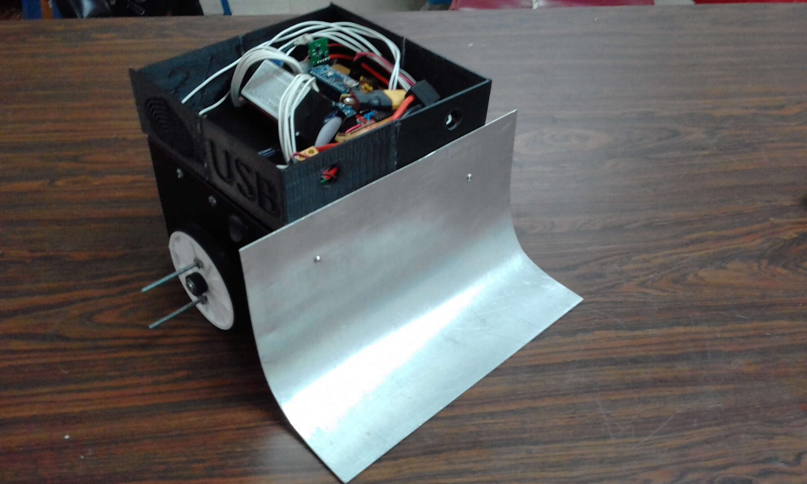
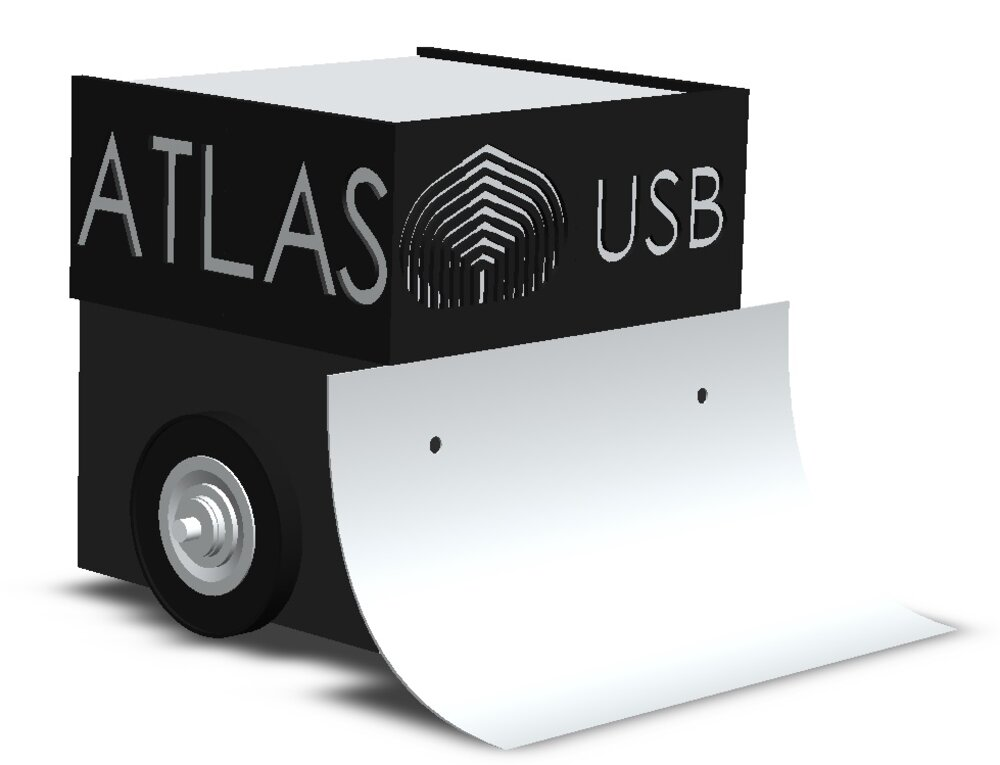
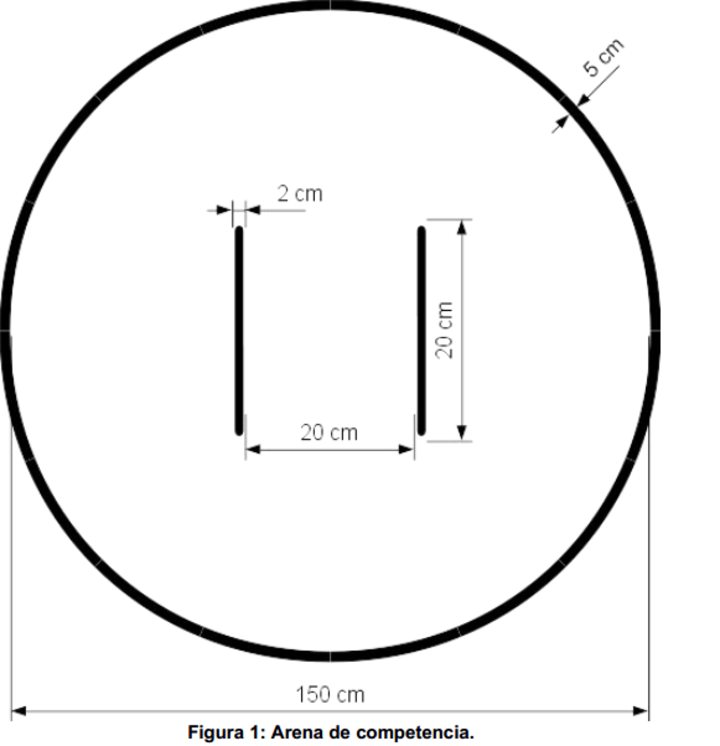
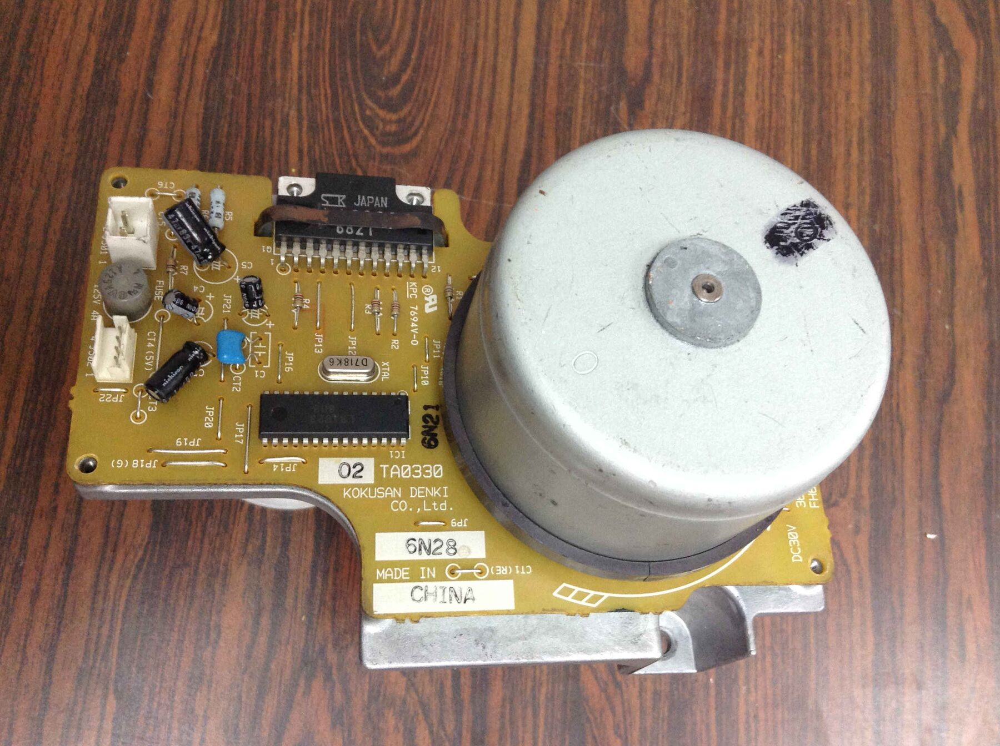
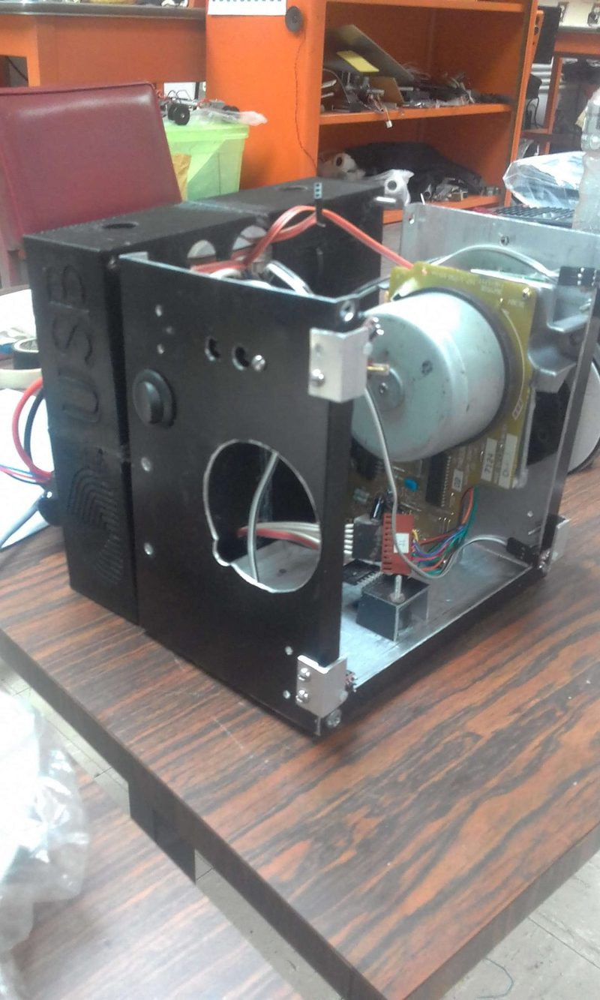
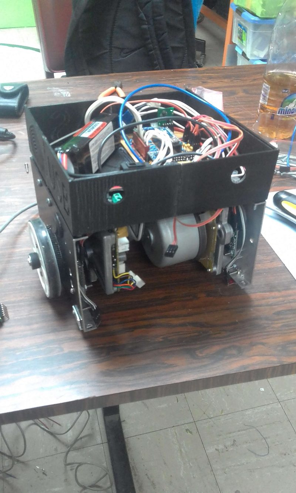
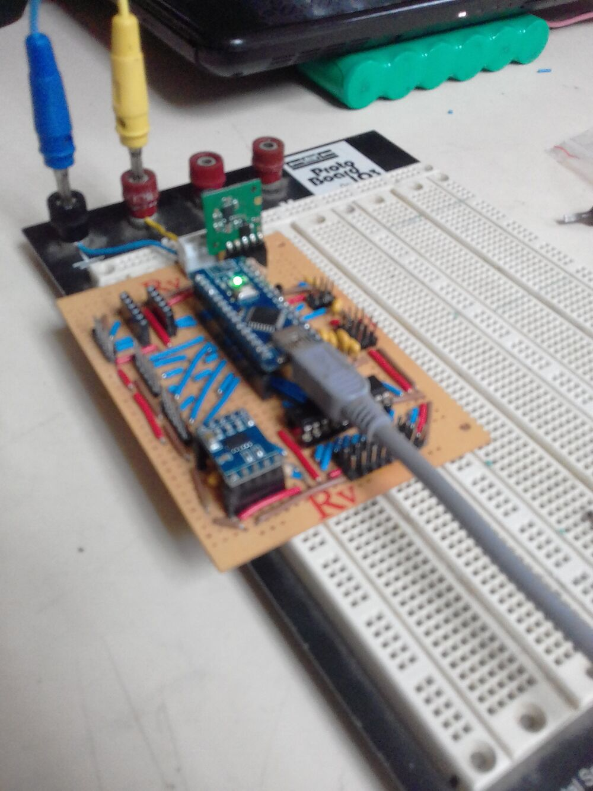
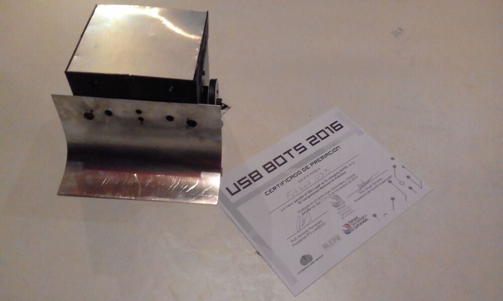

ATLAS, a Robot for Sumo Competitions
Atlas is an autonomous sumo robot built for the VI Venezuelan National Robotics Competition (USB BOTS 2016), where it took 2nd place in the Sumo category. It was developed by the FutBot – Future Robotics team at the Universidad Simón Bolívar (USB).
Atlas is a two‑wheeled, differential‑drive robot. Its job is to find the opposing robot inside the ring, drive into it and push it out — without driving itself out in the process. It runs on an Arduino Nano, with a closed‑loop speed controller on each wheel and a sensor‑driven state machine that decides how to move.

CAD model of Atlas, showing the drive wheels and the front scoop blade.
The Arena
A sumo match is fought inside a circular ring (the dohyō): 150 cm in diameter, with a 5 cm border marking the edge and two short starting lines at the centre. The two robots start back‑to‑back and, after a mandatory delay following the start signal, must push the opponent out of the ring or immobilise it. Leaving the ring on your own means losing the round, so edge awareness matters as much as attacking.

Competition arena — 150 cm ring, 5 cm edge border, central start lines.
System Overview
| Controller | Arduino Nano (ATmega328P, 16 MHz, 5 V) |
| Drivetrain | Two brushless DC gearmotors, differential drive — wheel radius 0.08 m, track 0.25 m |
| Motor control | Per‑wheel PWM / direction / brake / enable, single‑channel tacho feedback, analog current sense |
| Speed control | Two independent PID loops on wheel RPM; unicycle → differential‑drive kinematics |
| Main sensors | Sharp GP2Y0A21YK infrared and HC‑SR04 ultrasonic distance sensors (front / sides / rear) |
| Extra channels | TLC2543 11‑channel, 12‑bit SPI ADC: forward proximity, ring‑edge reflectance, 3‑axis accelerometer |
| Firmware | ~1,000 lines of C/C++ across 11 Arduino modules |
Mechanical Design
The chassis is 3D‑printed and was designed in SolidWorks; it went through three iterations before the competition version. A curved aluminium scoop blade across the front is the offensive tool — angled to slip under the opposing robot and lift its wheels off the ground so it loses traction. A roller‑ball caster at the rear keeps the robot level while the two driven wheels do the work, each turned through a small gear train from its motor.
The full part files and 2D manufacturing drawings for every version are in the repository.
Drivetrain & Motors

Atlas is driven by two brushless DC motors salvaged from office equipment. There was no datasheet or wiring diagram for them, so the team reverse‑engineered the driver board to work out how to command it from the Arduino. The board is built around two ICs:
- SLA6023 — 3‑phase brushless motor driver (60 V, 6 A, 25 W).
- LB1823 — 3‑phase brushless pre‑driver, originally made for office‑automation motors.
Once mapped out, the board takes a simple logic interface from the Nano — a PWM speed input, a direction bit, a brake line and an enable line — and returns a single‑channel tachometer pulse that the firmware counts to measure wheel speed.


Sensing
Atlas locates its opponent with distance sensors covering the front, sides and rear of the chassis:
- Infrared — a Sharp GP2Y0A21YK analog IR distance sensor.
- Ultrasonic — an HC‑SR04 ultrasonic ranging module.
The firmware turns each into a distance reading and the strategy code compares it against a per‑sensor threshold, backed by measured ADC‑vs‑distance calibration tables. A TLC2543 — an 11‑channel, 12‑bit SPI ADC — adds the extra analog inputs the Nano runs out of: two forward‑facing proximity sensors, four downward reflectance sensors for the ring edge, and a 3‑axis accelerometer. The competition firmware acts on the proximity channels; the edge and accelerometer channels are read but were not yet wired into the behaviour.
The KiCad electronics design in the repository documents a fuller sensor ring — four Sharp analog IR sensors, one per side — from a later revision of the same layout.
Control System
Motion commands are given in unicycle form — a forward speed V and a turn rate ω. A differential‑drive kinematics step converts (V, ω) into a target speed for each wheel, which becomes a target RPM. Two independent PID loops then track those targets: each loop compares the commanded RPM against the RPM measured from the tacho pulses (counted over 100 ms windows) and adjusts the motor PWM.
Before writing the Arduino code, the kinematics were modelled and plotted in MATLAB (matlab/Sumo Atlas/) — sweeping V and ω to check the resulting wheel velocities and RPM — and then ported to C.
Each motor also has an ACS711 current sensor. If a motor draws more than its current limit — typically during a sustained push against the opponent — a fold‑back limiter lowers that wheel's PID output ceiling until the current comes back down, protecting the driver board from a stalled push.

The hand‑wired control board: Arduino Nano, sensor conditioning and the connectors to the motor drivers.
Match Strategy
Tactics are a small state machine. Every loop, estrategia() looks at the sensors and picks a target state; a dispatcher then runs the matching behaviour:
- Start delay — hold still for the mandatory count after the start signal.
- Opening move — one open‑loop ~90° turn to get off the start line.
- Search — spin in place, sweeping the Sharp sensors across the ring.
- Attack — when a sensor sees the opponent, drive at it: straight ahead if it is dead centre, or on a curve if it is off to one side.
- Re‑acquire — if the target is lost, drop back to Search.
The sensors are checked in priority order — front‑centre first, then the front‑left and front‑right proximity channels, then the side Sharps — so the robot always commits to the most head‑on contact available. For example, a front‑centre reading past its ~80 cm threshold triggers a straight charge at full commanded speed.
Competition Result
2nd place, Sumo category — VI Competencia Nacional de Robótica (USB BOTS 2016), Centro Ítalo Venezolano, Caracas, 7–9 November 2016. Built with Javier Inojosa for FutBot – Future Robotics.

Atlas next to the USB BOTS 2016 second‑place certificate.
Repository
The GitHub repository holds the complete project: the Arduino firmware (11 modules — motor driver, kinematics, PID, state machine, sensor drivers), the KiCad electronics design, the SolidWorks CAD and drawings for all three chassis versions, and the MATLAB kinematics scripts. The README documents the full hardware and firmware architecture, plus a look back at the bugs and the changes I would make revisiting it today.
Posted In:
Robotics